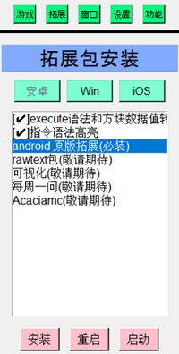
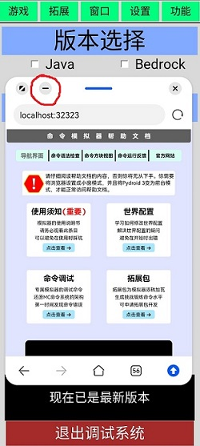

软件使用
本调试程序需要与 MT管理器，浏览器 组合使用才可以完整体验所有功能。
如果你有其他文本编辑器可以替代MT管理器，可以直接跳过本段内容。如果你还没有下载MT管理器，可以点击链接进行下载。
MT管理器下载：点击下载
本调试程序只涉及点击和输入文字操作。
如果安卓用户执意多次执行返回操作，
将会直接关闭此调试程序。注意：这不是刻意的设计，而是Pydroid 3在程序运行下的自身设定。
菜单栏
进入调试程序主界面，请关注最上方的菜单栏，有一个功能按钮，点击功能按钮，可以在以下三种不同的按钮功能中切换。
图1是窗口切换，你可以在游戏、拓展包列表、拓展包窗口、设置四个界面中切换。可以花一些时间对这几个界面进行熟悉。
图2是文字输入时需要的功能按钮，适用于本程序所有的文本输入框。设计这些按钮的原因是因为Pydroid
3无法直接使用输入法中的这些功能，所以需要额外设计的按钮进行支持。
原版拓展包
进入拓展包列表界面，用户需要先选择使用的系统平台，你可以在安卓和windows中选择，
由于IOS不支持tkinter界面库，所以IOS版本的拓展包暂时不可用。

如果用户只是为了单纯使用拓展包，则不需要安装原版拓展。用户可以根据需要自行选择安装。
如果用户需要使用命令模拟器的主体内容，则需要点击安装原版拓展，原版拓展是模拟器必须使用的模块，
如果拒绝安装则无法运行命令模拟器的主要内容。安卓用户需要耐心等待安装过程，
大约需要1~2分钟，因为模块下载完成后需要进行本地编译过程。
注意：安卓用户在按照原版拓展时需要将本程序以前台或小窗模式运行，
程序设置在后台则会暂停运行，安装过程将不会有任何进展。
本地网站
命令模拟器在启动时会自动搭建一个本地服务器，这个服务器将服务于命令模拟器中的重要功能，例如命令的语法错误反馈信息。
并且你所阅读的帮助文档服务也由该本地服务器提供。
命令模拟器的本地服务器地址为: localhost:32323。
注意：安卓用户使用的Pydroid 3在切至后台会导致本程序暂停运行，本地服务器也会因此暂停运行。
解决方法：将浏览器设置成小窗模式，并且将Pydroid 3变为前台模式，才能正常使用本地服务器服务。

当安卓用户使用完成浏览器的功能，可以点击图片中红圈内的最小化按钮，
即可最小化浏览器而防止屏幕空间的空间占用。
文字输入
命令模拟器使用tkinter UI库进行搭建，因此很多文字操作功能无法直接在安卓和Windows中直接兼容。
安卓平台撤回和恢复操作不支持。
因此在命令模拟器中的撤回和恢复需要菜单栏中的功能按钮进行操作。
撤回和恢复仅支持对文字的修改。
安卓平台的命令模拟器同样也不支持全选、复制、剪切、粘贴操作，需要依靠菜单栏中的按钮进行支持。
如果安卓用户想选择部分文字，可以点击开始的位置，然后长按拖动，即可完成选择部分文字的操作。
部分安卓用户由于输入法差距，换行也无法使用，菜单栏中的按钮也支持换行。
安卓平台的命令模拟器并不支持通过输入法中的粘贴直接从外部复制或剪切的文字内容，
因此请使用菜单栏中的粘贴功能，该按钮可以直接粘贴外部文字。
用户登录
命令模拟器的用户登录主要是为拓展包而服务的。拓展包的下载需要在服务器中验证用户是否拥有拓展包，
如果用户想拥有拓展包，需要在命令模拟器官网中购入。如果没有账号，也可以在官网进行注册。
命令模拟器的账户的通行码有效期为两个月，届时需要进入网站重新获取通行码。
右键菜单
命令模拟器支持右键菜单，现在为止右键菜单支持MC所有字符的复制，以及复制MC内各种项目的ID。
Windows用户使用鼠标右键即可唤出右键菜单，安卓用户需要长按命令模拟器界面2秒，才可以唤出右键菜单。
快捷全选复制
用户可通过此按钮对输入框中所有的内容进行快速复制。
批量复制字符
用户可通过官网网站查询需要的文字对应的Unicode编码。
在输入框输入的合法Unicode编码可添加收藏，并供下一次快速寻找与复制。
查询游戏内ID
在搜索框中输入关键词即可搜索各类ID，现支持物品，方块，实体，群系，伤害，药效，附魔，槽位，迷雾，规则，结构，掉落，声音，配方
复制文件命令
在main.py所在的目录下，文件夹functionality内有一个名为command的文件夹，该文件夹支持读取.txt .mcfunction文件和子文件夹的文件。
软件会自动去除空行，并给用户提供小窗口下的命令复制功能。通常适用于将文件命令转移到命令方块内。
注意：如果你使用title命令显示的信息里有多行显示，请注意补充手动补充内容！！！！
错误日志
命令模拟器在运行时由于程序可能存在bug而导致运行的暂停，产生的日志在根目录下的log文件夹内。
用户会看见诸如游戏运行出现错误，日志 game_run.txt 已生成的字样。
遇到这种情况，可以向开发者提交日志，并详细描述错误产生时用户正在进行的操作和被操作的对象(文件，命令等)，
有助于开发者更快速的解决问题。
软件更新
命令模拟器在服务器查询到最新版本时会提醒用户是否需要更新。
安卓用户在根目录需要寻找update.py文件，使用Pydroid 3打开文件后，运行文件即可更新。
Windows用户在根目录需要寻找 Windows更新.bat 文件，双击运行后即可更新。
如果用户误删除了程序的重要文件，也可以通过更新来进行恢复。